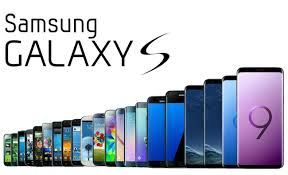
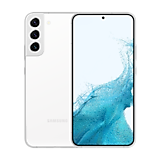
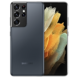
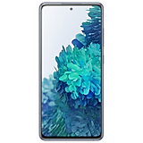
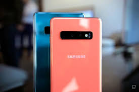

Samsung Galaxy S series |
|
| Samsung |
Samsung
|
| s22 | |
| s22+ | |
| s21 | |
| s20fe | |
| s10+ | |
| vniz | |
s2291 Экран Тип Dynamic AMOLED Размер 6.1 дюймов Разрешение 1080 x 2340 пикселей Соотношение сторон 19.5:9 Плотность пикселей 425 точек на дюйм Частота обновления 120 Гц Макс. заявленная яркость 780 нит Макс. заявленная яркость в HDR 1300 нит Поддержка HDR Да, HDR10+ Защита дисплея Gorilla Glass Victus Plus Соотношение экрана к корпусу 87.4% Особенности - DCI-P3 - Always-On Display Тестирование дисплея Цветовой охват sRGB 99.3% ШИМ (PWM) 239 Гц Время отклика 10 мс Контрастность ∞ Бесконечная Реальная пиковая яркость (авто) 858 нит Samsung Galaxy S22 получил достойный AMOLED-дисплей с большим запасом яркости, однако здесь не хватает функции предотвращения мерцания. Хотя это не критически важно, конкуренты имеют ее на борту. Цвета на экране выглядят отлично, но если вас что-то не устраивает, всегда можно внести изменения в настройки. Поддержка HDR никуда не делась, она даже стала лучше. Максимальная частота обновления равна 120 Гц, и она регулируется автоматически в зависимости от сценария использования устройства. Источники: NotebookCheck [3]
s22+Смартфон Samsung Galaxy S22+ оснащен дисплеем Dynamic AMOLED 2X с диагональю 6,6 дюйма и разрешением 1080×2340, прикрытым плоским стеклом без загнутых краев Corning Gorilla Victus+. Физические размеры экрана составляют 70×145 мм, соотношение сторон — 19,5:9, плотность точек — 393 ppi.5 апр. 2022 г.
s21ultra93 Экран Тип Dynamic AMOLED Размер 6.8 дюймов Разрешение 1440 x 3200 пикселей Соотношение сторон 20:9 Плотность пикселей 515 точек на дюйм Частота обновления 120 Гц Макс. заявленная яркость 1500 нит Поддержка HDR Да, HDR10+ Защита дисплея Gorilla Glass Victus Соотношение экрана к корпусу 89.8% Особенности - DCI-P3 - Always-On Display Реальная пиковая яркость (авто) 1023 нит Samsung Galaxy S21 Ultra может похвастаться новым Dynamic AMOLED 2x экраном с адаптивной частотой обновления 120 Гц, существенно улучшающая плавность работы оболочки и приложений. Он обладает очень высоким уровнем яркости, а благодаря стеклу Victus его поверхность идеально гладкая и очень прочная. Единственным недостатком является искажения белого цвета во время отклонения на небольшие углы.
s20fe84 Экран Тип Super AMOLED Размер 6.5 дюймов Разрешение 1080 x 2400 пикселей Соотношение сторон 20:9 Плотность пикселей 407 точек на дюйм Частота обновления 120 Гц Макс. заявленная яркость 740 нит Поддержка HDR Да, HDR10+ Защита дисплея Corning Gorilla Glass 3 Соотношение экрана к корпусу 84.8% Особенности - DCI-P3 - Always-On Display Samsung Galaxy S20 FE получил дисплей премиального качества с повышенной частотой обновления, что дарит ощущение отличной плавности работы интерфейса. Его диагональ считается большой, а разрешения 2400 на 1080 пикселей более чем достаточно для комфортного чтения даже мелкого текста. Уровень яркости большой – никаких проблем с взаимодействием с телефоном на улице нет. Реклама Реклама
s10+ 75 Экран Тип Super AMOLED Размер 6.4 дюймов Разрешение 1440 x 3040 пикселей Соотношение сторон 19:9 Плотность пикселей 522 точек на дюйм Частота обновления 60 Гц Макс. заявленная яркость 1200 нит Поддержка HDR Да, HDR10+ Защита дисплея Corning Gorilla Glass 6 Соотношение экрана к корпусу 87.5% Особенности - DCI-P3 - Always-On Display Тестирование дисплея Цветовой охват sRGB 96.5% ШИМ (PWM) 235 Гц Время отклика 4.8 мс Контрастность ∞ Бесконечная Реальная пиковая яркость (авто) 798 нит Samsung Galaxy S10 Plus обладает экраном Dynamic AMOLED, сильной стороной которого является цветопередача. Дисплей не страдает от излишней насыщенности цветов — картинка как никогда выглядит естественно. Высокая яркость обеспечивает идеально четкое изображения в любых условиях эксплуатации, а беспрецедентная контрастность является ключевым фактором при просмотре HDR-видео.